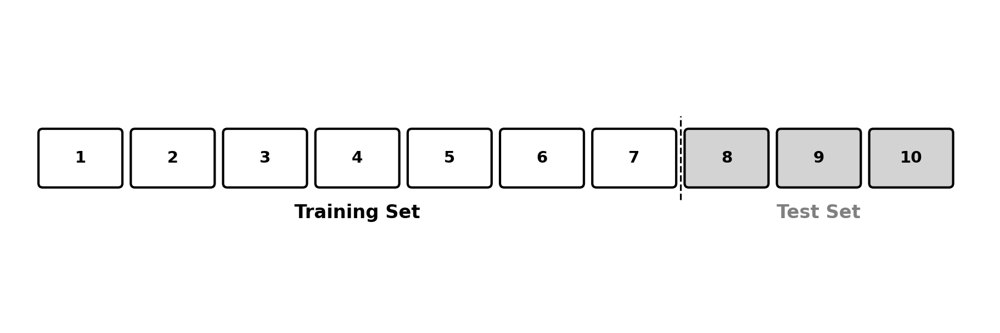

21 Estimating Linear Regression Performance
Finding the best-fitting line for any dataset is already tough. But can we use these lines to predict quantities in the future? We can, but we have to be careful. This chapter will highlight some important nuances.
21.1 Going back to model evaluation
We have already established that we care for accurate predictions. Planning our week in our ice cream shop, we want to have a good estimate of future sales. We can use these estimates to prepare the right quantity of ice cream (inventory) and hire the right number of people (staff).
How good are our future predictions? From previous chapters, we can compute the error of a linear regression using the mean squared error.

This summarises how closely the predictions of our linear regression fit historical data. And this is the main tension of this chapter. This does not answer the question: how good will the model be on future data?
You may have already seen the mention “past performance does not guarantee future results” in the financial industry. This applies to machine learning too. In fact, past performance that is too good may even indicate poor future performance. A model that memorises historical data perfectly may not generalise well to new observations. This is a phenomenon known as overfitting. Memorising the test answers does not make you a better mathematician.
It turns out that it is much easier to predict historical data than future data. Why? Because we can use historical data to build the model. As historical data is used in training, the model learns information from it. We find the coefficients (slope and intercept) that best fit this training data.
But how can we measure the model’s performance on future unseen data? This is difficult, as unseen data is, by definition, unseen. The moment we see it, it becomes seen. Can we estimate the performance of the model on future unseen data? Can we try to measure it? Think about it before reading on.
21.2 The train/test split
Yes, we can. To do so, we can remove a portion of the training dataset for testing. This practice is called the train/test split. It divides the available dataset into the training set and the test set.

The model evaluation process would then look like this:
- Partition: Split the dataset into training and test sets
- Fit the model: compute the coefficients that minimise the MSE on the training set
- Predict: use the fitted model to generate predictions on the test set, keeping the model coefficients constant
- Evaluate: compute the mean squared error of the model on the test set only
This process estimates the performance of the model on data it has not seen before. This is important because this is exactly how the model will be used in practice.
Going back to the ice cream sales, we want to know how good our model can predict future sales, not past ones. This is the only model accuracy we care for.
This touches on a deeper point on the philosophy of knowledge. It is easy to build theories that perfectly explain the past. This is why History is difficult: there are many theories that plausibly explain what already happened. This is the reason we have many competing theories on the causes of World War I. Was the main factor German expansionism or accidental escalation?
The real test of a theory is its ability to make falsifiable predictions about the future. These predictions are risky: they can be either right or wrong.
This is why there are many competing theories on the causes of World War I and only one Newton’s Law of Universal Gravitation. It is the only theory that can make accurate predictions about the attraction between objects.
I can hear the serious Physicists not liking the above paragraph. It turns out that the predictions generated by Newton’s law are wrong when objects get very (very) big or move at a speed close to the speed of light. This is where Einstein’s General Relativity comes in. Still, all of these theories are validated by falsifiable predictions.
21.3 Example
To make sure that our model can accurately predict future ice cream sales, let’s go through an example. Consider the following data:
| Date | Temperature (°C) | Rainfall (mm) | Ice Cream Sales |
|---|---|---|---|
| 2025-06-02 | 22 | 3 | 490 |
| 2025-06-03 | 25 | 0 | 570 |
| 2025-06-04 | 20 | 8 | 420 |
| 2025-06-05 | 28 | 1 | 630 |
| 2025-06-06 | 24 | 5 | 510 |
We split the data between the training set and the test set. In this simple example, we keep the last two dates for testing (5th and 6th of June). We then fit the model over the training set (2nd to 4th of June).
After fitting, suppose we find the coefficient vector:
\[ \mathbf{w} = \begin{pmatrix} 20 \\ 20 \\ -5 \end{pmatrix} \]
This corresponds to the model: \(\text{Sales} = 20 + 20 \times \text{Temperature} - 5 \times \text{Rainfall}\).
We then use this trained model to generate predictions on the test set:
\[ \mathbf{X}_{\text{test}} = \begin{pmatrix} 1 & 28 & 1 \\ 1 & 24 & 5 \end{pmatrix} \]
\[ \hat{\mathbf{y}}_{\text{test}} = \mathbf{X}_{\text{test}} \mathbf{w} = \begin{pmatrix} 1 \times 20 + 28 \times 20 + 1 \times (-5) \\ 1 \times 20 + 24 \times 20 + 5 \times (-5) \end{pmatrix} = \begin{pmatrix} 575 \\ 475 \end{pmatrix} \]
As we have actual ice cream sales for the 5th and 6th of June, we can compute the mean squared error over these predictions:
\[ \hat{\mathbf{y}}_{\text{test}} - \mathbf{y}_{\text{test}} = \begin{pmatrix} 575 \\ 475 \end{pmatrix} - \begin{pmatrix} 630 \\ 510 \end{pmatrix} = \begin{pmatrix} -55 \\ -35 \end{pmatrix} \]
\[\begin{aligned} \text{MSE}_{\text{test}} &= \frac{1}{n} (\hat{\mathbf{y}}_{\text{test}} - \mathbf{y}_{\text{test}})^T (\hat{\mathbf{y}}_{\text{test}} - \mathbf{y}_{\text{test}}) \\ &= \frac{1}{2} \begin{pmatrix} -55 & -35 \end{pmatrix} \begin{pmatrix} -55 \\ -35 \end{pmatrix} \\ &= \frac{1}{2}(3025 + 1225) = 2125 \end{aligned} \]
We have estimated the test error of a linear regression model. This MSE of \(2125\) is our best estimate of how well this model would perform on future unseen data.
Exercise 21.1 Using the same data and model above, compute the training MSE (using only observations from June 2nd to 4th). Compare it with the test MSE of \(2125\). Which one is lower? Why does this make sense?
There is no one-size-fits-all percentage here. This decision comes with trade-offs. On the one hand, we want the test set to be representative of future data. To do so, the larger the test set, the better.
On the other hand, with a fixed dataset, as the test set grows, the training data shrinks. The model will then have less data to train on, which could limit its ability to find the optimal coefficients.
A common split is 80% training and 20% testing, but this varies depending on the dataset size and the problem at hand.
21.4 Representativeness of the test set
To be a good estimation of model error on future unseen data, the test set must be representative of future unseen data. For instance, a linear regression fitted to predict the sales of one ice cream shop could not be used to predict the sales of a much bigger shop.
The testing process should also mimic the conditions in which the model will be generating predictions. Looking at the ice cream sales prediction, the model will be used to predict sales for future dates based on temperature. For this reason, it makes sense to keep the last dates of the dataset as the test set. This way, the model will be evaluated on future data that it has not seen.
Summarising: if the model will be used to predict future data, the test set should be a time-split of the dataset. It should be as close as possible to what future data will look like.
The relationship between symptoms and a medical diagnosis should remain stable over time. For instance, a cough and runny nose is a good indicator of a cold or flu. For these problems that do not have a time component, the test set can be randomly sampled from the dataset. In other words, you can just select data points at random. Following the Law of Large Numbers, this random sample should be representative of the dataset as the number of test observations increases.
Even for problems that are apparently stable over time, there could be a hidden time aspect. Looking at medical diagnosis, time could play an important role. For instance, sneezing and a runny nose in April are more likely to be due to an allergy than the beginning of a cold. The onset of a new pandemic (e.g., COVID-19) could also change the interpretation of a symptom like coughing.
For all of these reasons, even in cases that have no apparent time-dependency, it is important to remember that the world changes. If it does, it makes sense to use a time-split of the dataset to understand how a model would perform on future unseen data, and not only on unseen data.
21.5 Final Thoughts
In this chapter, we introduced the train/test split as a way to estimate how well a model will perform on future unseen data. We set aside part of our data, pretend we have not seen it, and evaluate our model on it.
The true test of any model is its ability to make accurate predictions about data it has never seen. This applies to linear regression, machine learning, and even to scientific theories.
21.6 Solutions
Solution 21.1. Exercise 21.1
The training set consists of June 2nd to 4th:
| Temperature | Rainfall | Sales |
|---|---|---|
| 22 | 3 | 490 |
| 25 | 0 | 570 |
| 20 | 8 | 420 |
Using \(\mathbf{w} = (20, 20, -5)\), the training predictions are:
\[\begin{aligned} \hat{y}_1 &= 20 + 20 \times 22 + (-5) \times 3 = 20 + 440 - 15 = 445 \\ \hat{y}_2 &= 20 + 20 \times 25 + (-5) \times 0 = 20 + 500 - 0 = 520 \\ \hat{y}_3 &= 20 + 20 \times 20 + (-5) \times 8 = 20 + 400 - 40 = 380 \end{aligned}\]
The training errors:
\[ \hat{\mathbf{y}}_{\text{train}} - \mathbf{y}_{\text{train}} = \begin{pmatrix} 445 - 490 \\ 520 - 570 \\ 380 - 420 \end{pmatrix} = \begin{pmatrix} -45 \\ -50 \\ -40 \end{pmatrix} \]
\[\begin{aligned} \text{MSE}_{\text{train}} &= \frac{1}{3} (\hat{\mathbf{y}}_{\text{train}} - \mathbf{y}_{\text{train}})^T (\hat{\mathbf{y}}_{\text{train}} - \mathbf{y}_{\text{train}}) \\ &= \frac{1}{3} \begin{pmatrix} -45 & -50 & -40 \end{pmatrix} \begin{pmatrix} -45 \\ -50 \\ -40 \end{pmatrix} \\ &= \frac{1}{3} (2025 + 2500 + 1600) = \frac{6125}{3} \approx 2042 \end{aligned}\]
The training MSE (\(\approx 2042\)) and test MSE (\(2125\)) are similar in this small example. In general, the training MSE tends to be lower than the test MSE, because the model was specifically optimised to fit the training data. Its performance on unseen data will typically be slightly worse.